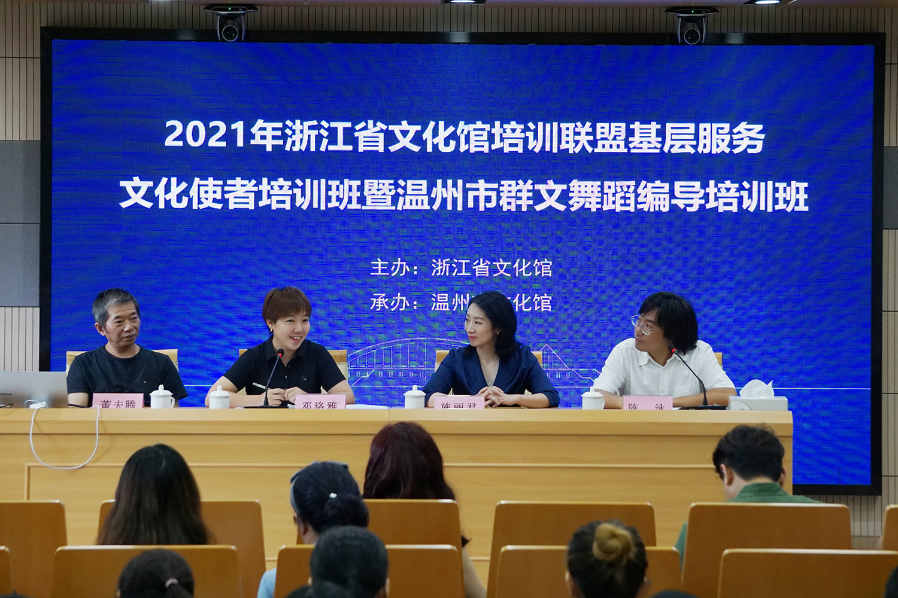
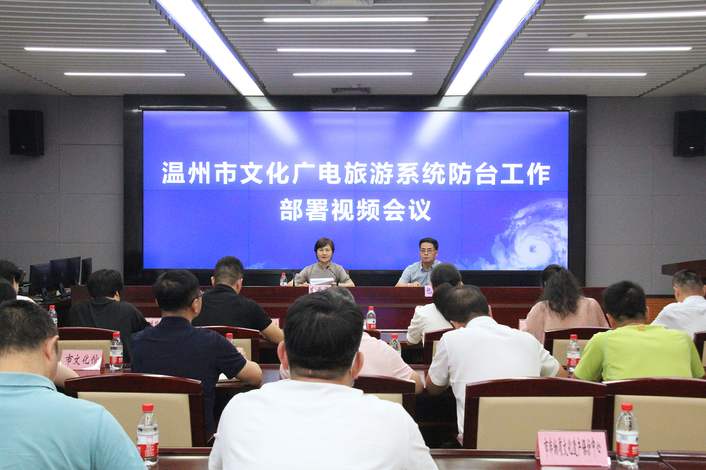
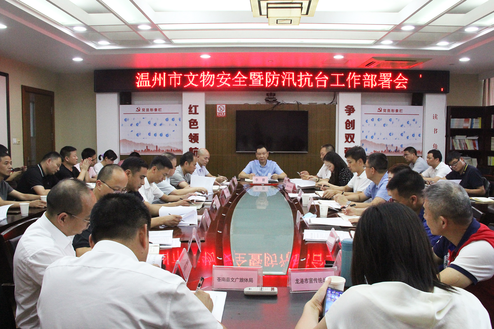

无障碍阅读|
登录|
智能问答
浙江市人民政府
浙江政务服务网
浙里办APP
- 首页
- 组织机构
- 信息公开
- 工作动态
- 政务公开
- 办事服务
- 公共服务
- 文旅专题
-
- 互动交流
- 我要咨询
- 我要投诉
- 我要举报
- 我要建议
- 领导信箱
- 来信公开
- 来信统计
- 办件统计



-
2021年浙江省文化馆培训联盟基层服务文化使者培训班...
7月21日至23日，2021年浙江省文化馆培训联盟基层服务文化使者培训班暨温州市群文舞蹈编导培训班在温州市文化馆举办......
-
温州召开全市文化广电旅游系统防台工作部署视频会议...
7月21日至23日，2021年浙江省文化馆培训联盟基层服务文化使者培训班暨温州市群文舞蹈编导培训班在温州市文化馆举办......
-
筑牢文物安全红线、底线和生命线！温州召开全市文安...
7月21日至23日，2021年浙江省文化馆培训联盟基层服务文化使者培训班暨温州市群文舞蹈编导培训班在温州市文化馆举办......
-
温州市文化馆扩大校地合作“朋友圈”，推动文化温州...
7月21日至23日，2021年浙江省文化馆培训联盟基层服务文化使者培训班暨温州市群文舞蹈编导培训班在温州市文化馆举办......
文旅要闻
市政府信息
文旅资讯
媒体视点
全媒体平台
手机官网
智游温州
全域导览
虚拟游温州
官方微信
官方微博
抖音
今日头条
一点资讯
文化温州云
网站工作年度报表
互动交流
在线咨询
调查征集
领导信箱
信件公开
办事统计
地址：温州市市府路500号市行政管理中心1号楼6楼、19楼
电话：0577-88967178 88967178

主办单位：温州市文化广电旅游局 开发管理：温州市文化旅游信息中心 浙ICP备20025500号-2
网站地图 网站识别码：330300046 浙公安备 33030202000884号技术支持：温州瑞星科技
温州文旅资讯微信
温州文旅资讯微博
浙里好玩